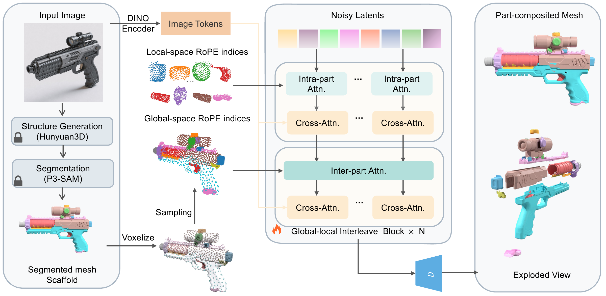
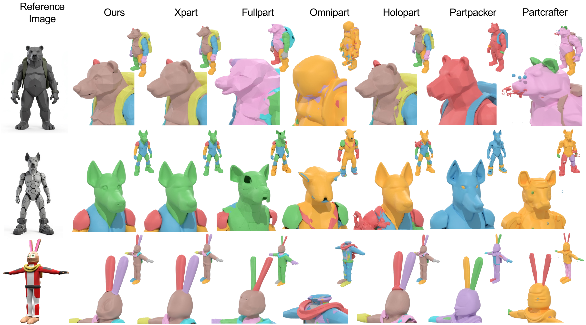
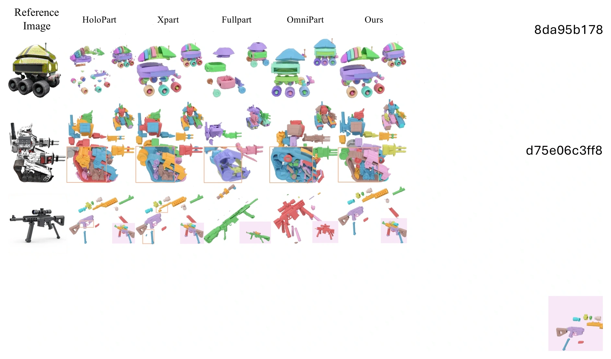
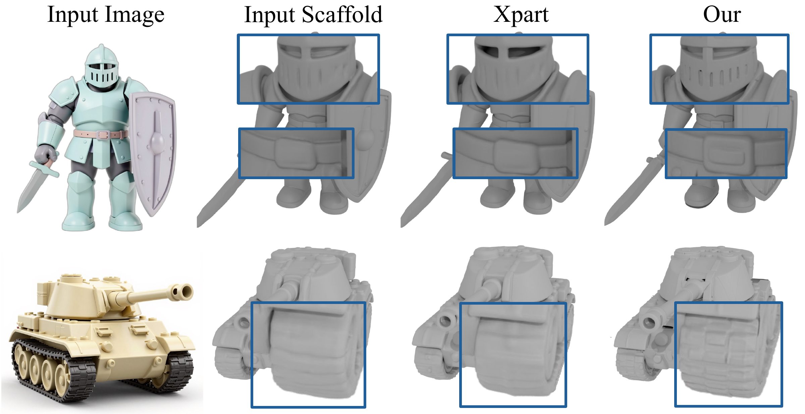
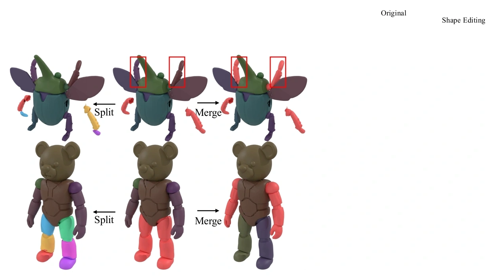

HOLISTIC PRIORS · PART-LEVEL GENERATION
Seeing Both the Forest
and the Trees
Reusing Holistic 3D Priors for
Part-Decomposed Generation
* Corresponding author: Shenghua Gao.
One holistic prior. A world of detailed, individually editable parts.
THE WHOLE SHAPE. EVERY PART.
Detail within parts.
Coherence across the whole.
Generating 3D assets with explicit parts requires both geometric detail inside each part and structural coherence across the whole object. StructParts inherits these properties from a pretrained holistic 3D model through dual-frame coordinate interleaving.
Each shape latent is interpreted in both a part-local and an object-global reference frame. Guided by a segmented mesh scaffold, a global-local interleaved transformer reuses the prior at both scales. Lightweight finetuning enables part-decomposed generation, part-mesh refinement, and part-level editing.
From a holistic prior to explicit parts

One image, many coherent parts


Parts you can refine and edit
Part-mesh refinement

Part-level editing

@misc{zhao_structparts,
title = {Seeing Both the Forest and the Trees:
Reusing Holistic 3D Priors for Part-Decomposed Generation},
author = {Zhao, Yiqun and Huang, Binbin and Duan, Haobin
and Zhao, Zibo and Gao, Shenghua}
}Publication details will be updated when the paper is available.